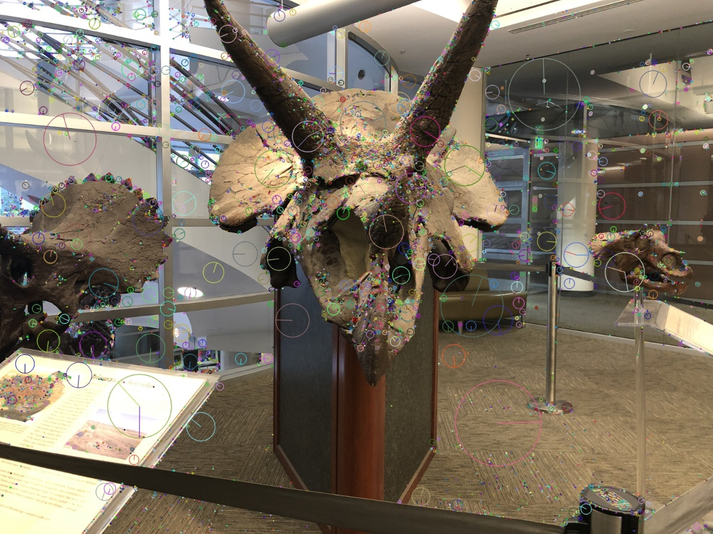
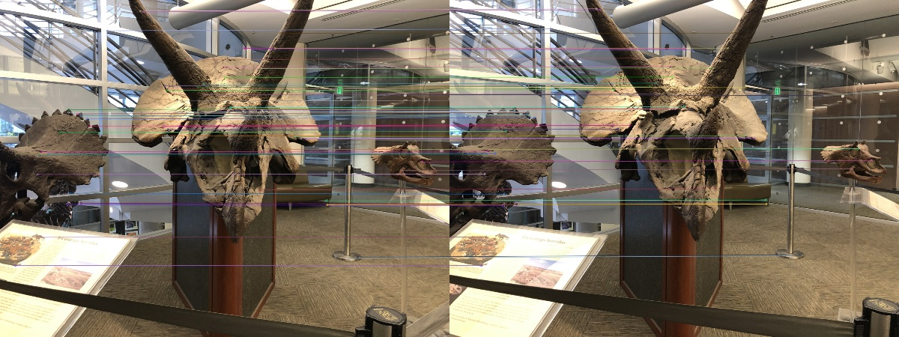

Multi-view geometry / Python
Dinosaur
reconstruction.
A computer vision course project using 62 calibrated photographs. Rotate the point cloud below to inspect the result.
Method
Incremental Structure from Motion.
SIFT
Detect local image features.
Matching
Mutual ratio test + RANSAC.
Initialization
Essential matrix + triangulation.
Registration
PnP + incremental triangulation.
Bundle adjustment
Refine camera poses and 3D points.


Results
Reprojection errors are measured at the processing resolution.
| Configuration | Cameras | Points | Mean error | Median error | Track views | Pair agreement | BA status |
|---|
Runs use different tracks; only the before/after BA errors are directly comparable. Pair agreement requires positive depth and ≤2 px error in both views. Scale is arbitrary; no ground-truth poses or geometry were available to check 3D accuracy.